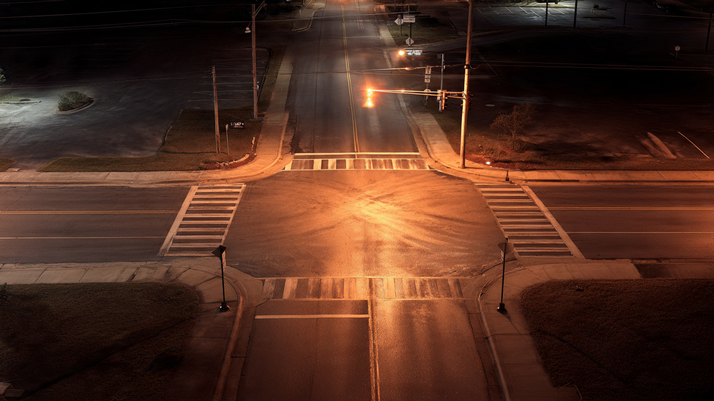

Five States Saved 250 Pedestrians. Twenty-Four States Killed More.

Pedestrian deaths in America dropped 11% in the first half of 2025. GHSA called it the largest year-over-year decline since tracking began in 2011. Every outlet ran the number, but five states drove more than two-thirds of that improvement while 24 states got worse. The "best pedestrian safety year in 15 years" isn't a national achievement. It's a geographic lottery.
The raw number: 3,024 pedestrians struck and killed between January and June 2025, down from 3,395 in the same period of 2024. That's 371 lives, real and measurable progress. But decompose it by state and the picture fractures. Alabama, California, Maryland, New Mexico, and New York collectively accounted for more than 248 of those 371 saved lives.[1] Remove those five states, and the remaining 45 barely moved the needle.
New Mexico is the most striking case: the state cut its pedestrian death toll nearly in half, from 53 in H1 2024 to 27 in H1 2025, a 49% decline.[1] It deployed crosswalk-activated flashing lights at high-crash intersections, a $40,000-per-intersection intervention that appears to have worked. Meanwhile, Hawaii went the opposite direction: 16 deaths jumped to 25, a 56% surge, vaulting it to the highest per-capita pedestrian fatality rate in the nation at 3.5 per 100,000 residents.[1] Hawaii is now considering legislation requiring drivers to stop and stay stopped for pedestrians in crosswalks, the kind of law most states adopted decades ago.
Apply an economic concentration metric to these safety gains and the picture gets uncomfortable. If the 11% improvement were uniformly distributed across 50 states, each would contribute roughly 2% of the decline. Instead, the distribution is so top-heavy it resembles a monopoly: a handful of states capture the gains while the majority backslide. In the antitrust world, this kind of concentration triggers regulatory scrutiny. In traffic safety, it gets filed under "good news."
The geographic pattern is stark: highest pedestrian death rates cluster in the South and warm-climate states. Louisiana (3.4 per 100K), Florida, South Carolina, and Arizona (all 3.0) make up a crescent of pedestrian danger that has persisted for years.[1] These are places where walking is common, infrastructure was engineered for cars, and darkness falls early in winter months. Lowest rates belong to Idaho, Rhode Island (both 0.5), Minnesota, and South Dakota (both 0.6), states where pedestrians are rarer, roads are less dense, and walking infrastructure is either better or simply less necessary.
Three-quarters of pedestrian fatalities occur at night.[2] The Insurance Institute for Highway Safety has tested 23 vehicles for nighttime pedestrian automatic emergency braking, and more than half earned a "basic" score or no credit at all. Eight vehicles that scored "superior" or "advanced" in daylight dropped to "basic" or worse at night.[2] The technology marketed as a lifesaver works well in the conditions where most pedestrians survive anyway, and fails in the conditions that actually produce most deaths. The 11% national decline happened despite this, not because of it.
Darkness. Sprawl. Infrastructure debt. The variables that kill pedestrians are not the ones addressed by national headlines or automaker press releases about AEB adoption. New Mexico proved that a $40,000 crosswalk flasher can halve a death count. Hawaii proved that having no crosswalk law at all will double one. The 371 fewer deaths in 2025 are not the product of a system getting safer. They are the product of a few jurisdictions getting less dangerous while most hold steady or get worse.
The honest counter: small-number statistics at the state level are volatile. Hawaii jumping from 16 to 25 deaths could be noise. New Mexico dropping from 53 to 27 could be regression to the mean from an anomalously deadly 2024. When you decompose a national number into 50 state-level numbers, you're making the sample sizes small enough that year-over-year swings can be random. The national trend IS real, and 15 consecutive quarterly declines is not an accident. But the geographic decomposition reveals something the national trend obscures: the improvement is structurally concentrated, not uniformly distributed, and that distinction matters for where resources should go next.
One more number worth staring at: 3,024 pedestrians died in just six months, and that counts as a record-breaking good year. America's H1 2025 toll is still 2.5% above pre-pandemic 2019 levels, when 2,951 died in the same window.[1] Sixteen people per day, every day. We celebrated the 371 we saved while barely noticing we still haven't recovered to where we were before COVID broke something in the way Americans drive.
Sources & References
- Governors Highway Safety Association, Pedestrian Traffic Fatalities by State: 2025 Preliminary Data, March 2026. ghsa.org
- IIHS, Few vehicles excel in new nighttime test of pedestrian autobrake. iihs.org
- NHTSA, Early Estimate of Motor Vehicle Traffic Fatalities and Fatality Rate in 2025, April 2026. nhtsa.gov
What You Can Do
If you live in one of the 24 states where pedestrian deaths increased, look up your city's pedestrian safety infrastructure: does your municipality use rectangular rapid-flashing beacons (RRFBs) at uncontrolled crosswalks? New Mexico's experience suggests the technology works and costs orders of magnitude less than an AEB upgrade. Check whether your state requires drivers to stop for pedestrians in crosswalks at all; Hawaii's lack of such a law correlates with its surge. If you drive a vehicle with pedestrian AEB, know that the system likely does not work at night on unlit roads. Drive accordingly. GHSA state-level data is public at ghsa.org.